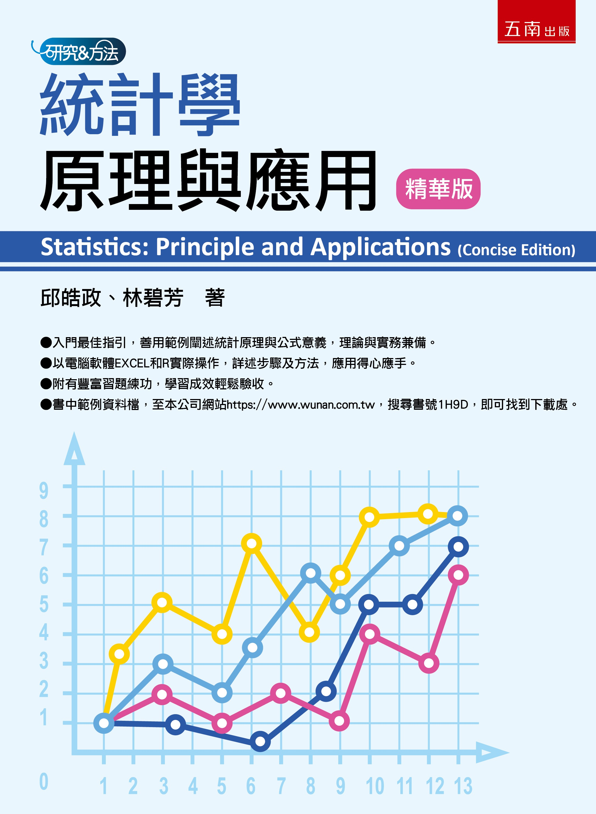
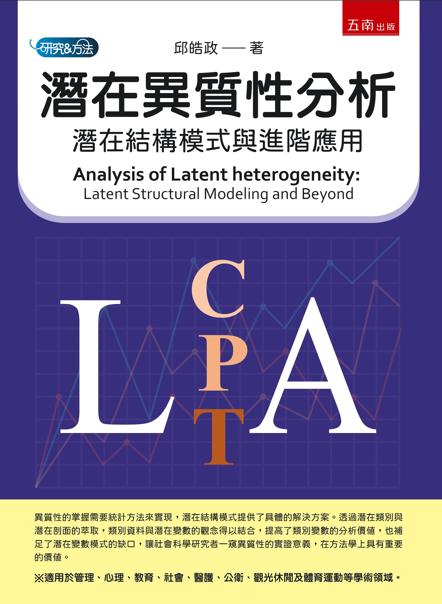
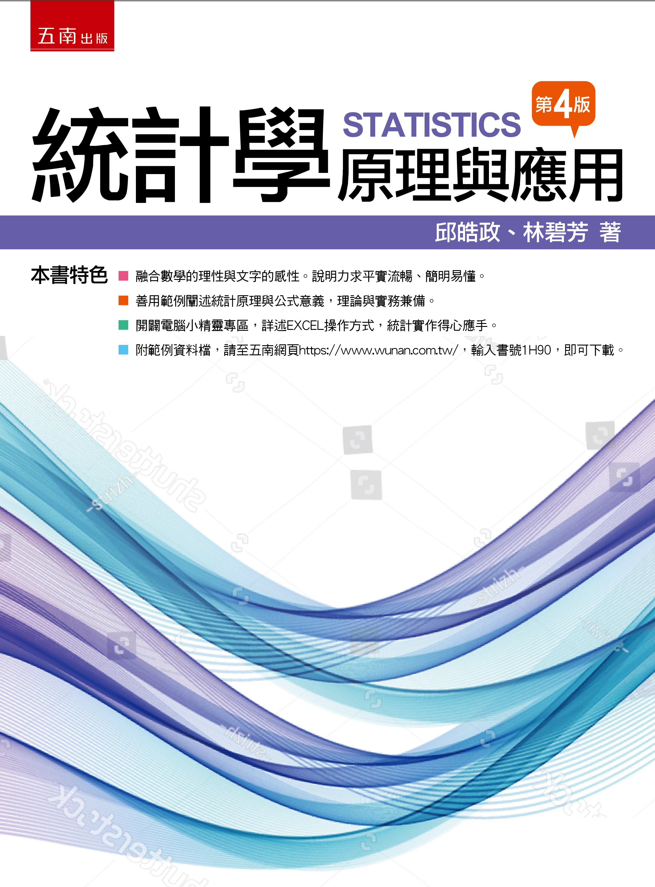
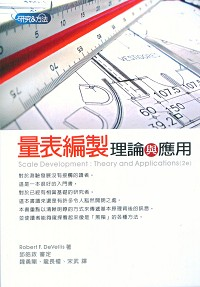

Books & prefaces
專書著作
Books, methods & the stories behind them
專書寫作是我教學工作的一部分。從統計與量化研究的基礎，到結構方程模式、多層次分析、潛在異質性與貝氏統計，我希望把模型背後的想法與分析步驟說清楚。各書的序言，也記錄了寫作緣起與對研究方法的思考。






沒有符合的書目，請更換關鍵字或選擇「全部」。
書目依版本出版年排列。重印日期另列，避免與新版混淆。來源：原網站專書清單（另開分頁）、各出版社產品頁。資料核對：2026-10-02。